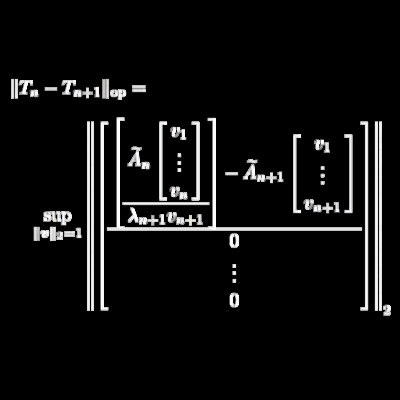
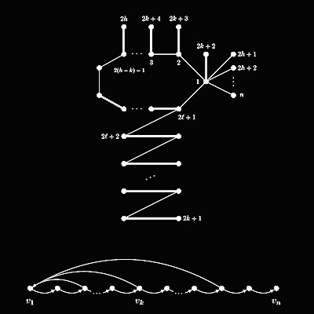
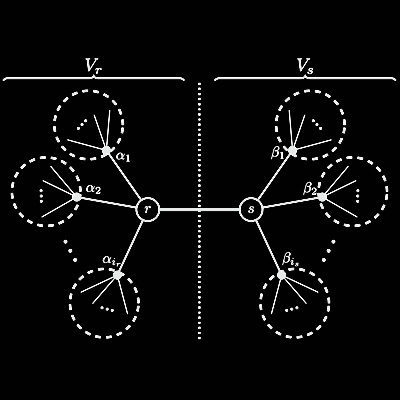
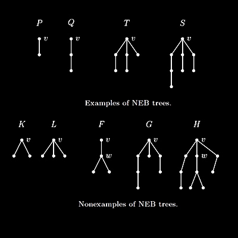
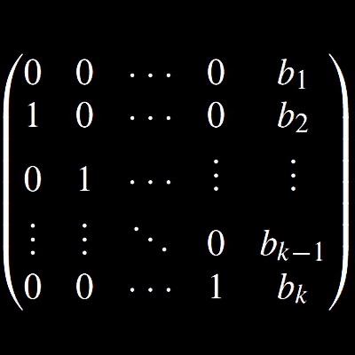
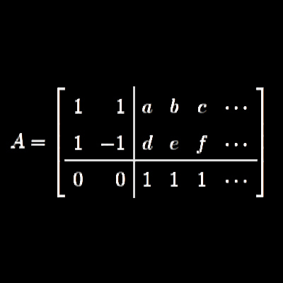
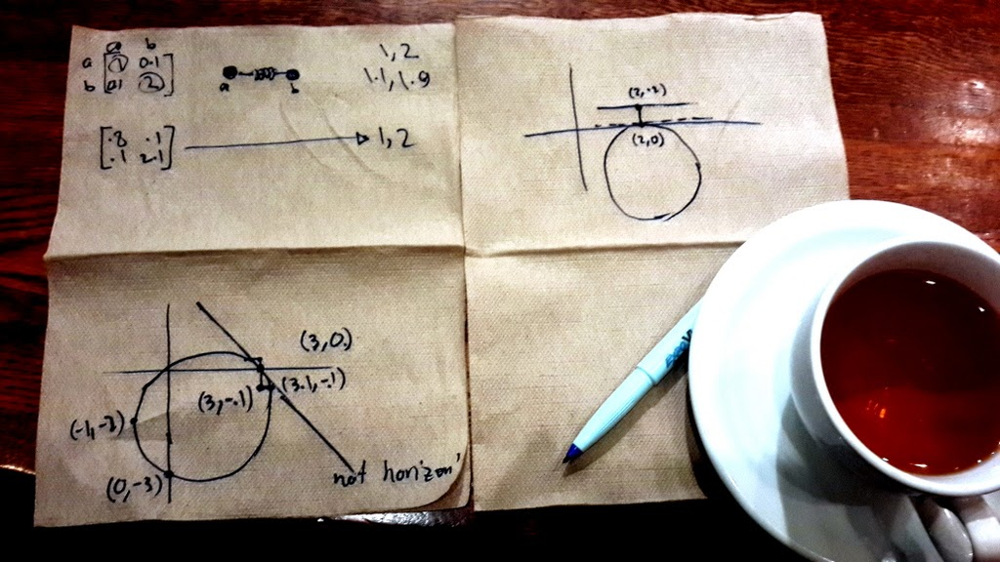

Publications
Under Review
-
(2018+) Community structure detection and evaluation during preictal and postictal hippocampal depth recordings
Keivan Hassani Monfared, Kris Vasudevan, Jordan. S. Farrell, and G. Cam Teskey: PDF arXivWe show how anti-correlation between neurons firing rates forms communities of neurons that influence the behaviour during an eppleptic seizure. -
(2018+) Inverse spectral problems for linked vibrating systems and structured matrix polynomials
Keivan Hassani Monfared and Peter Lancaster: PDF arXivWe show that for a given set of \( nk \) distinct real numbers \( \Lambda \), and \( k \) graphs on \( n \) nodes, \( G_0, G_1,\cdots,G_{k-1} \), there are real symmetric \( n\times n \) matrices \( A_s \), \( s=0,1,\ldots, k \) such that the matrix polynomial \( A(z) := A_k z^k + \cdots + A_1 z + A_0 \) has proper values \( \Lambda \), the graph of \( A_s \) is \( G_s \) for \( s=0,1,\ldots,k-1 \), and \( A_k \) is an arbitrary nonsingular (positive definite) diagonal matrix. When \( k=2 \), this solves a physically significant inverse eigenvalue problem for linked vibrating systems.
Published
-
(2018) An analog of Matrix Tree Theorem for signless Laplacians
Linear Algebra and Its Applications (560) 43--55, DOI:10.1016/j.laa.2018.09.016
Keivan Hassani Monfared and Sudipta Mallik: PDF arXivA spanning tree of a graph is a connected subgraph on all vertices with the minimum number of edges. The number of spanning trees in a graph \( G \) is given by Matrix Tree Theorem in terms of principal minors of Laplacian matrix of \( G \). We show a similar combinatorial interpretation for principal minors of signless Laplacian \( Q \). We also prove that the number of odd cycles in \( G \) is less than or equal to \( \frac{\det(Q)}{4} \), where the equality holds if and only if \( G \) is a bipartite graph or an odd-unicyclic graph. -
 (2018) A structured inverse spectrum problem for infinite graphs
Linear Algebra and Its Applications (539) 28--43, DOI:10.1016/j.laa.2017.10.025
Keivan Hassani Monfared and Ehssan Khanmohammadi: PDF arXivIn this paper it is shown that for a given infinite graph \( G \) on countably many vertices, and a compact, infinite set of real numbers \( \Lambda \) there is a real symmetric matrix \( A \) whose graph is \( G \) and its spectrum is \( \Lambda \). Moreover, the set of limit points of \( \Lambda \) equals the essential spectrum of \( A \), and the isolated points of \( \Lambda \) are eigenvalues of \( A \) with multiplicity one. It is also shown that any two such matrices constructed by our method are approximately unitarily equivalent. -
(2017) Existence of a not necessarily symmetric matrix with given distinct eigenvalues and graph
Linear Algebra and Its Applications (527) 1--11, DOI:10.1016/j.laa.2017.04.006
Keivan Hassani Monfared: PDF arXivFor given distinct numbers \( \lambda_1 \pm \mu_1 \rm{i}, \lambda_2 \pm \mu_2 \rm{i}, \ldots, \lambda_k \pm \mu_k \rm{i} \in \mathbb{C} \setminus \mathbb{R} \) and \( \gamma_1, \gamma_2, \ldots, \gamma_l \in \mathbb{R} \), and a given graph \( G \) with a matching of size at least \( k \), we will show that there is a real matrix whose eigenvalues are the given numbers and its graph is \( G \). In particular, this implies that any real matrix with distinct eigenvalues is similar to a real, irreducible, tridiagonal matrix. -

(2016) The nowhere-zero eigenbasis problem for a graph
Linear Algebra and Its Applications (505) 296--312 , DOI:10.1016/j.laa.2016.04.028
Keivan Hassani Monfared and Bryan L. Shader: PDFUsing previous results and methods, it is shown that for any connected graph \( G \) on \( n \) vertices and a set of \( n \) distinct real numbers \( \Lambda \), there is an \( n\times n \) real symmetric matrix \( A \) whose graph is \( G \), its spectrum is \( \Lambda \), and none of the eigenvectors of \( A \) have a zero entry. -
 (2016) On the principal permanent rank characteristic sequences of graphs and digraphs
Electronic Journal of Linear Algebra (31) 187--199, DOI:10.13001/1081-3810.3117
Keivan Hassani Monfared, Paul Horn, Franklin H. J. Kenter, Kathleen Nowak, John Sinkovic, and Josh Tobin: PDF arXivGiven an \( n\times n \) real matrix \( A \), the principal characteristic perrank sequence of \( A \) is defined as \( r_0, r_1, r_2, \ldots, r_n \), where for \( k \geq 1 \), \( r_k=1 \) iff \( A \) has a principal submatrix of size \( k \) with nonzero permanent, and \( r_0 = 1 \) iff \( A \) has a zero on its main diagonal. We study the following inverse problem: given a sequence \( r_0 r_1 \cdots r_n \) of zeros and ones, does there exist an \( n \times n \) real matrix which achieves this sequence? As a result, we characterize all the sequences corresponding to (symmetric) entry-wise nonnegative matrices, and provide some results for the skew-symmetric case. -
(2016) Spectral characterization of matchings in graphs
Linear Algebra and Its Applications (496) 407--419, DOI:10.1016/j.laa.2016.02.004
Keivan Hassani Monfared and Sudipta Mallik: PDF arXivA spectral characterization of the matching number (the size of a maximum matching) of a graph is given. More precisely, it is shown that the graphs \( G \) of order \( n \) whose matching number is \( k \) are precisely those graphs with the maximum skew rank \( 2k \) such that for any given set of \( k \) distinct nonzero purely imaginary numbers there is a real skew-symmetric matrix \( A \) with graph \( G \) whose spectrum consists of the given \( k \) numbers, their conjugate pairs and \( n-2k \) zeros. -
 (2015) The \( \lambda \)-\( \tau \) structured inverse eigenvalue problem
Linear and Multilinear Algebra (63) 2275--2300, DOI:10.1080/03081087.2014.1003527
Keivan Hassani Monfared and Bryan L. Shader: PDFFor a matrix \( A \) let \( A(\{r,s\}) \) denote the principal submatrix obtained form \( A \) by removing rows and columns \( r \) and \( s \). Let \( T \) be a tree on \( n \) vertices which satisfies some necessary combinatorial restriction, \( \Lambda \) a set of \( n \) distinct real numbers, \( M \) a set of \( n-2 \) distinct real numbers, and \( r \) and \( s \) two distinct fixed vertices of \( T \). Also, assume that \( M \) and \( L \) satisfy second degree strict Cauchy interlacing inequalities and some genericity conditions. Using various combinatorial techniques it is shown that there is a real symmetric matrix \( A \) whose graph is \( T \), spectrum of \( A \) is \( \Lambda \) and spectrum of \( A(\{r,s\}) \) is \( M \). Then, using Jacobian method this result was extended to any supergraph of this family of trees. Also, some consequences of these results related to perturbations of diagonal entries of a matrix are presented. -
 (2015) Construction of real skew-symmetric matrices from interlaced spectral data, and graph
Linear Algebra and Its Applications (471) 241--263, DOI:10.1016/j.laa.2015.01.001
Keivan Hassani Monfared and Sudipta Mallik: PDF arXivWe provide analogues of the results presented in the \( 2013 \) paper for skew-symmetric matrices. This is first shown for a family of trees with nearly even branching at a vertex \( v \) (NEB trees) using various combinatorial techniques. Then the results are extended to any supergraph of such trees using the Jacobian method. Let \( G \) be a connected graph on \( n \) vertices, \( \Lambda \) a set of \( n \) distinct purely imaginary numbers which is closed under negation, and \( M \) a set of \( n-1 \) distinct purely imaginary numbers closed under negation which strictly interlaces \( \Lambda \). Also, let \( v \) be a vertex of \( G \). It is shown that if \( G \) has a spanning tree which is NEB at \( v \), then there is a real skew-symmetric matrix \( A \) whose graph is \( G \), its spectrum is \( \Lambda \), and the spectrum of \( A(v) \) is \( M \). Some properties of NEB trees are also studied. -
(2013) Construction of matrices with a given graph and prescribed interlaced spectral data
Linear Algebra and Its Applications (438) 4348--4358, DOI:10.1016/j.laa.2013.01.036
Keivan Hassani Monfared and Bryan L. Shader: PDFFor a matrix \( A \) let \( A(v) \) denote the principal submatrix obtained form \( A \) by removing its \( v \)-th row and column. In a 1989 paper, Duarte showed that for any given tree \( T \) on \( n \) vertices, \( \Lambda \) a set of \( n \) distinct real numbers, \( M \) a set of \( n-1 \) distinct real numbers that strictly interlaces \( \Lambda \), and \( i \) a fixed vertex of \( T \), there is a real symmetric matrix \( A \) whose graph is \( T \), spectrum of \( A \) is \( \Lambda \) and spectrum of \( A(v) \) is \( M \). In this paper we develop a method, called the Jacobian method, and show that Duarte's result holds for any connected graph. -
 (2010) On the existence of nowhere-zero vectors for linear transformations
Bulletin of the Australian Mathematical Society (82) 480--487, DOI:10.1017/S0004972710001619
Saeed Akbari, Keivan Hassani Monfared, Mohammad Jamaali, Ehssan Khanmohammadi, and Dariush Kiani: PDFIf for a matrix \( A \) there is a vector \( x \) such that the vectors \( x \) and \( Ax \) have no zero entries, then \( A \) is called to have the AJT property. In this paper we make further progress on the Alon-Jaeger-Tarsi (AJT) Conjecture, using combinatorial, probabilistic, and linear algebraic methods. The AJT conjecture asserts any nonsingular matrix over a field with at least 4 elements has the AJT property. It is shown that any nonzero matrix is similar to an AJT matrix, and some necessary and some sufficient conditions for a matrix to have the AJT property are given. Also, we provide a sharp bound for the number of the elements of the field in terms of the size of the matrix.
Thesis
-
(2014) The Jacobian Method: The Art Of Finding More Needles in Nearby Haystacks (PhD dissertation)
Keivan Hassani Monfared, Advisor: Bryan L. Shader: PDFIn this dissertation we develop the Jacobian method, and we give a detailed description of it, along with a geometric interpretation. We provide several examples and using the Jacobian method we solve three fundamental structured inverse eigenvalue problems including the \( \lambda \)-\( \mu \)-SIEP, the \( \lambda \)-\( \tau \)-SIEP, and the nowhere-zero eigenbasis problem for the \( \lambda \)-SIEP. The common strategy is to prove the existence of a solution for trees, then to show that these solutions are generic, and then use the Implicit Function Theorem to extend it to connected graphs. Several other important problems that can be solved using this method are mentioned, as well as two main directions for further development of the Jacobian method. -
 (2012) On the Permanent Conjecture (Masters thesis)
Keivan Hassani Monfared, Advisor: Bryan L. Shader: PDFThe permanent rank of a matrix \( A \), \( \rm{perrank}(A) \), is defined to be the size of a largest square submatrix of \( A \) with nonzero permanent. In this thesis we study some properties of the permanents and also permanent ranks of the matrices, and related problems. In particular we characterize matrices with small permanent ranks in order to study the following conjecture relating the \( \rm{perrank} \) and the \( \rm{termrank} \).
Conjecture: For any matrix \( A \), \[ \rm{perrank}(A) \geq \Bigg\lceil \frac{\mbox{termrank}(A)}{2} \Bigg\rceil,\] and for even \( \rm{termrank} \) the equality holds if and only if up to equivalence and reduction \( A=\bigoplus \left[\begin{array}{cr}1&1\\1&-1\end{array}\right] \).
In Progress
-
(2018+) Properties of a nonnegative reciprocal matrix and their application to AHP
Mojtabe Eslami and Keivan Hassani MonfaredWe study the properties of a nonnegative reciprocal matrices associated with graphs and their application to {AHP} -
(2018+) Dissonance networks and social influence
Omid Atabati, Mojtaba Eslami, and Keivan Hassani MonfaredWe model how a society manages conflicts between beliefs and social standings by forming a dissonance network, and then providing measures of centrality and modularity for such signed networks.
Unpublished
-
(2016) The maximum multiplicity of an eigenvalue of symmetric matrices with a given graph
Keivan Hassani Monfared and Sudipta Mallik: PDF arXivFor a graph \( G \), \( M(G) \) denotes the maximum multiplicity occurring of an eigenvalue of a symmetric matrix whose zero-nonzero pattern is given by edges of \( G \). We introduce two combinatorial graph parameters \( T^-(G) \) and \( T^+(G) \) that give a lower and an upper bound for \( M(G) \) respectively, and we show that these bounds are sharp.
It was pointed out by the referees that the bounds are not better than those given by zero forcing number of the graph.
Talks & Seminars
Invited
-
(2017-Jul)
Counting from one
High School Math Camp at University of Calgary, Calgary, AB, Canada -
(2017-Jul)
Counting to infinity
High School Math Camp at University of Calgary, Calgary, AB, Canada -
(2016-Nov)
Real life applications of calculus and linear algebra
Student Colloquium, University of Calgary, Calgary, AB, Canada -
(2016-Jul)
Using jacobian method to solve inverse eigenvalue problems for graphs: Abstract
International Linear Algebra Society (ILAS 16), Leuven, Belgium -
(2016-Jun)
Touching infinity
Junior Math Contestants, University of Calgary, Calgary, AB, Canada -
(2016-Mar)
Permanent ranks of matrices and generalized cycles of graphs: Abstract
47th Southeastern International Conference on Combinatorics, Graph Theory \& Computing, Boca Raton, FL, USA -
(2016-Jan)
On the principal permanent rank characteristic sequences of graphs: Abstract
Joint Mathematics Meeting 2016 (JMM 16), Seattle, WA, USA -
(2015-Jun)
Several examples on the jacobian method: Abstract
Canadian Discrete and Algorithmic Mathematics Conference (CanaDAM 15), Saskatoon, SK, Canada -
(2014-Aug)
The inverse principal perrank characteristic sequence problems: Abstract
Rocky Mountain-Great Plains Graduate Research Workshop in Combinatorics (GRWC 15), Denver, CO, USA -
(2013-Nov)
Using the jacobian method in structured inverse eigenvalue problems: Abstract
University of Colorado, Denver, CO, USA -
(2008-Jun)
On mathematics education
Parviz Shahriari Scientific and Cultural Foundation, Tehran, Iran
Contributed
-
(2018-Jul)
Graph partitioning problems arising in neuroscience: Abstract
Prairie Discrete Mathematics Workshop (PDMW18), Brandon, MB, Canada -
(2016-May)
Some inverse eigenvalue problems for graphs: Abstract
Western Canada Linear Algebra Meeting(WCLAM), University of Manitoba, Winnipeg, MB, Canada -
(2016-Jan)
Using the jacobian method to solve structured inverse eigenvalue problems
Joint Mathematics Meetings, Seattle, WA, USA -
(2015-Oct)
What do generalized cycles of a graph tell about each other?
Research Seminars, University of Calgary, Calgary, AB, Canada -
(2015-Sep)
How to find more solutions when you have one in hand
Research Seminars, University of Calgary, Calgary, AB, Canada -
(2015-Jan)
Nowhere-zero eigenbasis for a matrix with prescribed graph and spectrum: Abstract
Joint Mathematics Meetings, San Antonio, TX, USA -
(2014-Oct)
Building vibrating systems using linear algebra and calculus: Abstract
Student Colloquium, Western Illinois University, Macomb, IL, USA -
(2014-Oct)
Structured inverse eigenvalue problems: Abstract
Colloquium, Western Illinois University, Macomb, IL, USA -
(2014-Apr)
Skew-symmetric SIEP and the role of the jacobian method
Algebra Combinatorics and Number Theory seminars, University of Wyoming, Laramie, WY, USA -
(2014-Jan)
The jacobian method and structured inverse eigenvalue problems: Abstract
Joint Mathematics Meeting, Baltimore, MD, USA -
(2013-Nov)
On the importance of the jacobian method
Graduate Students Seminars, University of Wyoming, Laramie, WY, USA -
(2013-Oct)
Zonotopal algebra, an expository talk
Algebra Combinatorics and Number Theory seminars, University of Wyoming, Laramie, WY, USA -
(2013-Aug)
A structured inverse eigenvalue problem: Abstract
MathFest, Hartford, CT, USA -
(2013-Jul)
The \( \lambda \)-\( \mu \) structured inverse eigenvalue problem
Rocky Mountain Discrete Math Days, University of Wyoming, Laramie, WY, USA -
(2013-Jul)
The \( \lambda \)-\( \mu \) structured inverse eigenvalue problem: Abstract
Rocky Mountain Mathematics Consortium, University of Wyoming, Laramie, WY, USA -
(2012-Oct)
The \( \lambda \)-\( \mu \) structured inverse eigenvalue problem
Rocky Mountain Discrete Math Days, Denver University, Denver, CO, USA -
(2012-Sep)
A jacobian approach to some structured inverse eigenvalue problems
Algebra Combinatorics and Number Theory seminars, University of Wyoming, Laramie, WY, USA -
(2012-Sep)
Constructing matrices with interlacing spectral data and graph
Midwestern Graph Theory (MIGHTY) LIII Conference, Iowa State University, Ames, IA, USA -
(2012-Apr)
Why is the permanent rank important?
Graduate Student Combinatorics Conference, University of Illinois, Urbana-Champaign, IL, USA -
(2012-Jan)
On the permanent rank of matrices: Abstract
Joint Mathematics Meeting, Boston, MA, USA -
(2011-Oct)
Perrank v.s rank
Rocky Mountain Discrete Math Days, University of Wyoming, Laramie, WY, USA -
(2011-Mar)
What is the permanent?
Graduate Students Seminars, University of Wyoming, Laramie, WY, USA -
(2010-May)
A different approach to the hall's marriage theorem
Graduate Students Seminars, University of Wyoming, Laramie, WY, USA -
(2009-Nov)
A survey on the alon-jaeger-tarsi conjecture
Algebra Combinatorics and Number Theory seminars, University of Wyoming, Laramie, WY, USA -
(2006--07)
Biweekly math problem solving seminars
Undergraduate Students Seminars, Amirkabir Univeersity of Technology, Tehran, Iran
Selected Presentation Slides & Videos
PhD Dissertation Defense: PDF
The Jacobian method in 1 and a half napkins and a cup:
The Jacobian Method and Structured Inverse Eigenvalue Problems at JMM 14, Baltimore, MD: Video

The \(\lambda\)-\(\mu\) SIEP (long): PDF
The \(\lambda\)-\(\mu\) SIEP (short): PDF
The \(\lambda\)-\(\tau\) SIEP: PDF
Permanent Rank: PDF
Areas of Interest
Linear Algebra and Matrix Analysis
Inverse Eigenvalue Problems for Graphs
Multilinear Functions, Permanent
Combinatorics and Graph Theory
Matching Problems, Cycle Analysis
Applications in Neuroscience and Economics
Clustering, Centrality, Connectivity
Multilayer Netwroks, Dynamics on Networks
Dynamical Systems, Stability, Robustness
Signal Processing, Filtering
Data Science, Machine Learning, Deep Learning
Statistical Analysis, Regression Analysis, Hypothesis Testing
Inverse Eigenvalue Problems for Graphs
Multilinear Functions, Permanent
Combinatorics and Graph Theory
Matching Problems, Cycle Analysis
Applications in Neuroscience and Economics
Clustering, Centrality, Connectivity
Multilayer Netwroks, Dynamics on Networks
Dynamical Systems, Stability, Robustness
Signal Processing, Filtering
Data Science, Machine Learning, Deep Learning
Statistical Analysis, Regression Analysis, Hypothesis Testing
Collaborators
Saeed Akbari
Jordan Farrell
Paul Horn
Mohammad Jamaali
Franklin Kenter
Ehssan Khanmohammadi
Dariush Kiani
Peter Lancaster
Sudipta Mallik
Kathleen Nowak
Bryan Shader
John Sinkovic
Cam Teskey
Josh Tobin
Kris Vasudevan
Jordan Farrell
Paul Horn
Mohammad Jamaali
Franklin Kenter
Ehssan Khanmohammadi
Dariush Kiani
Peter Lancaster
Sudipta Mallik
Kathleen Nowak
Bryan Shader
John Sinkovic
Cam Teskey
Josh Tobin
Kris Vasudevan


{kind=link}